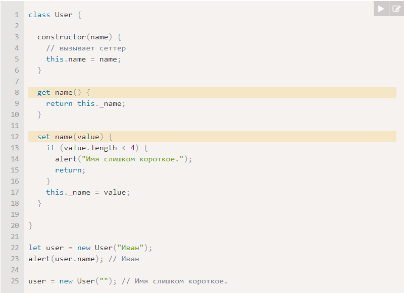
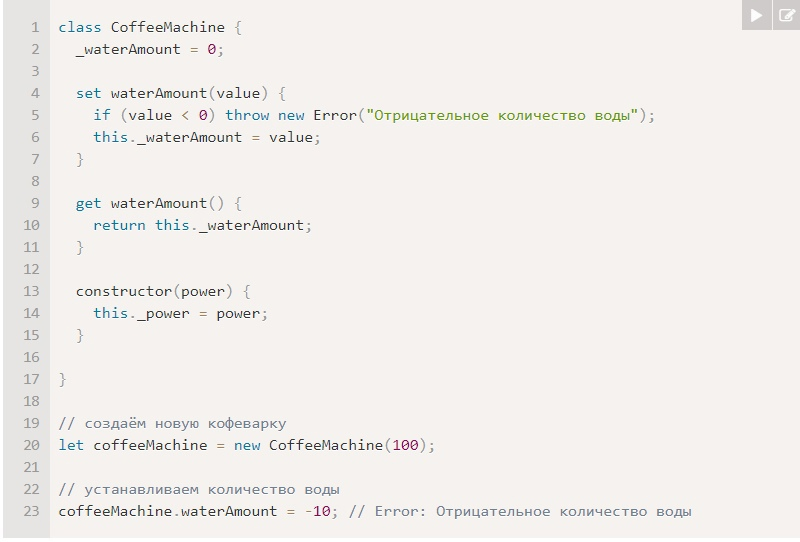

Синтаксис: class MyClass {constructor() { ... } method1() { ... } method2() { ... } ...}
Затем используйте вызов new MyClass() для создания нового объекта со всеми перечисленными методами. Пример:
Когда вызывается new User("Иван"): Создаётся новый объект, constructor запускается с заданным аргументом и сохраняет его в this.name.
…Затем можно вызывать на объекте методы, такие как user.sayHi().
В JavaScript класс – это разновидность функции. Вот что на самом деле делает конструкция class User {...}:
1) Создаёт функцию с именем User, которая становится результатом объявления класса.
Код функции берётся из метода constructor (она будет пустой, если такого метода нет).
2) Сохраняет все методы, такие как sayHi, в User.prototype.
При вызове метода объекта new User он будет взят из прототипа: поля в User, методы в User.prototype.
1) В отличие от обычных функций, конструктор класса не может быть вызван без new.
2) Методы класса являются неперечислимыми. Определение класса устанавливает флаг enumerable вfalse для всех методов в "prototype".
И это хорошо, так как если мы проходимся циклом for..in по объекту, то обычно мы не хотим при этом получать методы класса.
3) Классы всегда используют use strict. Весь код внутри класса автоматически находится в строгом режиме.
Вот пример user.name, реализованного с использованием get/set:

Для того, чтобы наследовать класс от другого, мы должны использовать ключевое слово "extends" и указать название родительского класса перед {..}.
Ниже Rabbit наследует от Animal:
Ключевое слово extends работает, используя прототипы. Оно устанавливает Rabbit.prototype.[[Prototype]] в Animal.prototype.
Так что если метод не найден в Rabbit.prototype, JavaScript берёт его из Animal.prototype.
Обычно мы не хотим полностью заменить родительский метод, а скорее хотим сделать новый на его основе, изменяя или расширяя его функциональность.
Мы делаем что-то в нашем методе и вызываем родительский метод до/после или в процессе.
У классов есть ключевое слово "super" для таких случаев:
1) super.method(...) вызывает родительский метод.
2) super(...) вызывает родительский конструктор (работает только внутри нашего конструктора).
Вот пример, где вызвали родительский stop() и наш hide():
У стрелочных функций нет super.
Если класс расширяет другой класс и не имеет конструктора, то автоматически создаётся такой «пустой» конструктор:
class Rabbit extends Animal {constructor(...args) {super(...args);}}
У Rabbit можно создать свой конструктор: constructor(name, earLength) {this.speed = 0;this.name = name;this.earLength = earLength;}
Но мы получим ошибку. Почему? В классах-потомках конструктор обязан вызывать super(...), и (!) делать это перед использованием this.
1) Когда выполняется обычный конструктор, он создаёт пустой объект и присваивает его this.
2) Когда запускается конструктор унаследованного класса, он этого не делает. Вместо этого он ждёт, что это сделает конструктор родительского класса.
Поэтому, если мы создаём собственный конструктор, мы должны вызвать super, в противном случае объект для this не будет создан, и мы получим ошибку.
Вот так будет правильно: constructor(name, earLength) {super(name);this.earLength = earLength;}
Дочерний конструктор должен вызвать super и унаследовать от родительского конструктора: super(name)
Мы также можем присвоить метод самой функции-классу, а не её "prototype". Такие методы называются статическими.
В классе такие методы обозначаются ключевым словом static, например: class User {static staticMethod() {alert(this === User);}}
Это фактически то же самое, что присвоить метод напрямую как свойство функции:
class User { } User.staticMethod = function() {alert(this === User);};
Обычно статические методы используются для реализации функций, принадлежащих классу, но не к каким-то конкретным его объектам.
Представим, что нам нужно создавать статьи через создание пустой статьи с сегодняшней датой. Пример:
Теперь каждый раз, когда нам нужно создать сегодняшний дайджест, нужно вызывать Article.createTodays().
Статические методы также используются в классах, относящихся к базам данных, для поиска/сохранения/удаления вхождений в базу данных.
Статические свойства также возможны, они выглядят как свойства класса, но с static в начале:
class Article {static publisher = "Илья Кантор";} alert( Article.publisher ); // Илья Кантор
Это то же самое, что и прямое присваивание Article: Article.publisher = "Илья Кантор";
Статические свойства и методы наследуются.
Мы можем вызвать Rabbit.compare, при этом будет вызван унаследованный Animal.compare:
Унаследованный конструктор должен вызвать super(), т.к. в противном случае this будет неизвестен.
В объектно-ориентированном программировании свойства и методы разделены на 2 группы:
1) Внутренний интерфейс – методы и свойства, доступные из других методов класса, но не снаружи класса.
2) Внешний интерфейс – методы и свойства, доступные снаружи класса.
В JavaScript есть два типа полей (свойств и методов) объекта:
1) Публичные: доступны отовсюду. Они составляют внешний интерфейс. До этого момента мы использовали только публичные свойства и методы.
2) Приватные: доступны только внутри класса. Они для внутреннего интерфейса.
Защищённые свойства обычно начинаются с префикса _.
Пример класса с НЕ защищённым waterAmount:
Пример класса с защищённым waterAmount:

Есть новшество в языке JavaScript, которое почти добавлено в стандарт: оно добавляет поддержку приватных свойств и методов.
Приватные свойства и методы должны начинаться с #. Они доступны только внутри класса.
От встроенных классов, таких как Array, Map и других, тоже можно наследовать.
Оператор instanceof позволяет проверить, к какому классу принадлежит объект, с учётом наследования.
Синтаксис: obj instanceof Class // true/false
В JavaScript можно наследовать только от одного объекта.
Иногда это может ограничивать нас. Например, у нас есть класс StreetSweeper и класс Bicycle,
а мы хотим создать их смесь: StreetSweepingBicycle. Для таких случаев существуют «примеси».
Примесь примесь определяет методы, которые реализуют определённое поведение.
Мы не используем примесь саму по себе, а используем её, чтобы добавить функциональность другим классам.
Простейший способ реализовать примесь в JavaScript – это создать объект с полезными методами,
которые затем могут быть легко добавлены в прототип любого класса.
В примере ниже примесь sayHiMixin имеет методы, которые придают объектам класса User возможность вести разговор:
Это не наследование, а просто копирование методов. Таким образом, класс User может наследовать от другого класса,
но при этом также включать в себя примеси, «подмешивающие» другие методы.
Примеси могут наследовать друг друга.